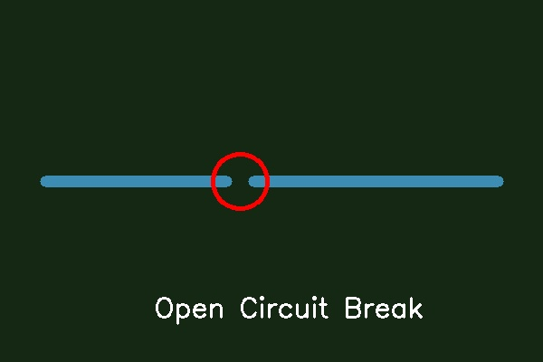
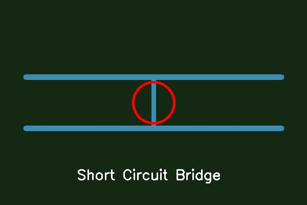
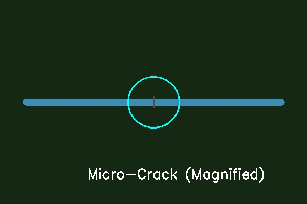
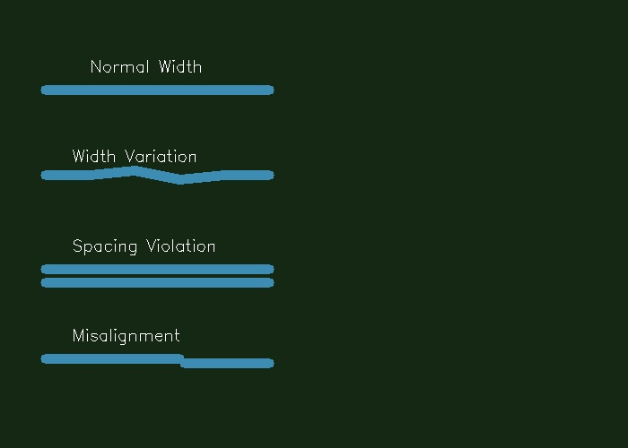

Common PCB Trace Defects
Understanding the types of defects that can occur in PCB traces and their visual characteristics
Open Circuits (Complete Breaks)
Open circuits represent complete breaks in PCB traces where electrical continuity is lost. These defects are among the most critical as they completely prevent signal transmission.
Figure 3: Open circuit defect showing complete trace break. Source: PCB defect dataset [1].
Characteristics of Open Circuits:
- Visual Appearance: Complete gap in the trace with visible substrate material
- Size Range: Typically 0.1mm to several millimeters wide
- Detection Difficulty: Relatively easy to detect due to high contrast
- Impact: Complete functional failure of affected circuit path
def detect_open_circuits(image):
"""Detect open circuit defects using edge detection"""
# Convert to grayscale
gray = cv2.cvtColor(image, cv2.COLOR_BGR2GRAY)
# Apply Canny edge detection
edges = cv2.Canny(gray, 50, 150)
# Find contours
contours, _ = cv2.findContours(edges, cv2.RETR_EXTERNAL, cv2.CHAIN_APPROX_SIMPLE)
# Filter contours that might represent open circuits
open_circuits = []
for contour in contours:
area = cv2.contourArea(contour)
if area > 100: # Minimum area threshold
open_circuits.append(contour)
return open_circuitsShort Circuits (Unwanted Connections)
Short circuits occur when traces that should be electrically isolated become connected, either through manufacturing defects or contamination.
Figure 4: Short circuit defect showing unwanted connection between traces. Source: PCB defect dataset [1].
Types of Short Circuits:
- Bridge Shorts: Copper bridges connecting adjacent traces
- Contamination Shorts: Conductive debris creating unwanted connections
- Design Shorts: Insufficient spacing between traces
- Via Shorts: Defects in via holes connecting different layers
Detection Challenges:
Short circuits are particularly challenging to detect because:
- They may be very small (micro-shorts)
- Contamination can be transparent or low-contrast
- They may only be visible under specific lighting conditions
Micro-Cracks
Micro-cracks are small fractures in PCB traces that may not immediately cause failure but can lead to intermittent connections or eventual failure under stress.
Figure 5: Micro-crack defect in PCB trace requiring high-resolution detection. Source: Tiny defect detection research [2].
Micro-Crack Characteristics:
- Size: Typically 10-100 micrometers wide
- Depth: May extend partially or completely through trace thickness
- Detection Requirements: High-resolution imaging (minimum 5μm pixel size)
- Stress Factors: Thermal cycling, mechanical stress, vibration
def detect_micro_cracks(image, min_crack_width=5):
"""Detect micro-cracks using morphological operations"""
# Convert to grayscale
gray = cv2.cvtColor(image, cv2.COLOR_BGR2GRAY)
# Apply Gaussian blur to reduce noise
blurred = cv2.GaussianBlur(gray, (3, 3), 0)
# Create structuring element for crack detection
kernel = cv2.getStructuringElement(cv2.MORPH_RECT, (min_crack_width, 1))
# Apply morphological opening to detect thin features
opened = cv2.morphologyEx(blurred, cv2.MORPH_OPEN, kernel)
# Find differences that might indicate cracks
diff = cv2.absdiff(blurred, opened)
# Threshold to isolate potential cracks
_, cracks = cv2.threshold(diff, 30, 255, cv2.THRESH_BINARY)
return cracksMissing Traces
Missing traces occur when portions of designed traces fail to be properly formed during the manufacturing process, often due to etching problems or photomask defects.
Common Causes:
- Etching Defects: Incomplete removal of copper in unwanted areas
- Photomask Issues: Defects in the photomask used for trace definition
- Process Variations: Inconsistent etching parameters
- Contamination: Foreign materials preventing proper etching
Detection Methods:
Missing traces are typically detected using template matching techniques:
- Compare manufactured board to reference design
- Identify areas where expected traces are absent
- Use geometric analysis to verify trace completeness
Geometric Errors
Geometric errors refer to deviations from the intended trace dimensions, including width variations, spacing violations, and shape distortions.
Figure 6: Geometric errors including width variations and spacing violations. Source: Design rule checking guidelines [4].
Types of Geometric Errors:
- Width Violations: Traces narrower or wider than design specifications
- Spacing Violations: Insufficient clearance between adjacent traces
- Shape Distortions: Non-rectangular trace shapes due to manufacturing issues
- Via Misalignment: Vias not properly centered on trace intersections
Measurement Techniques:
def measure_trace_width(image, trace_contour):
"""Measure trace width using morphological operations"""
# Create binary mask of the trace
mask = np.zeros(image.shape[:2], dtype=np.uint8)
cv2.fillPoly(mask, [trace_contour], 255)
# Apply distance transform
dist_transform = cv2.distanceTransform(mask, cv2.DIST_L2, 5)
# Find local maxima (center line)
local_maxima = cv2.dilate(dist_transform, None, iterations=1)
# Calculate width as twice the distance from center to edge
width_profile = dist_transform[local_maxima == dist_transform]
average_width = np.mean(width_profile) * 2
return average_widthDefect Classification Summary
The following table summarizes the key characteristics of each defect type and their detection requirements:
| Defect Type | Size Range | Detection Difficulty | Primary Method |
|---|---|---|---|
| Open Circuits | 0.1-5mm | Easy | Edge Detection |
| Short Circuits | 0.05-2mm | Moderate | Template Matching |
| Micro-Cracks | 10-100μm | Difficult | Morphological |
| Missing Traces | Variable | Easy-Moderate | Template Matching |
| Geometric Errors | Variable | Moderate | Morphological |